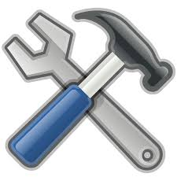

Toilets, Screen Doors, Drywall, Tile & More
When stuff breaks, we fix it. Our home repair contractors can save you the time and money it would otherwise cost to find and install a replacement for your broken fixtures and household items. We believe in a convenient, one-call solution where one call can get one of our house repair contractors on the way to fixing whatever you need fixed. Our professional repair services are backed by our Done Right Guarantee.
OUR SERVICES
INSTALLATION
Have you been always searching for the trustful company that can do all the electrician deals for you? We can install any thing you want. Just choose the service and enjoy.
BATHROOM REPAIR
Cracked tile? Drywall holes? If so, do not hesitate to contact our professional engineers as soon as possible. We can keep this frequently trafficked room looking and working at its best.
CEILING FAN REPAIR
Ceiling fans are not only beautiful, but they can be incredibly useful to the comfort of your home. If your fan is not working properly, do not wait to get our team involved. We can provide fast, effective fixes.
COUNTERTOP REPAIR
If your home’s countertop is starting to show its age—no matter whether it has become dingy, chipped, or otherwise broken—you can count on us. We will show up and make it look as good as new in no time.
DOOR REPAIR
Doors play an overlooked but critical component to the functioning of your home. If they are struggling to open, not keeping drafts out, or are otherwise broken, contact us for the repairs that you need.
DRYWALL REPAIR
Drywall suffer cracks from settling? Fall victim to moisture? Suffer damage from kids or mice? Give it the attention that it deserves by contacting our handymen regarding our fast drywall repair services.
ELECTRICAL REPAIR
If you have a small repair project involving the wiring of your home or different electrical components, and you think it may be overkill to call in an electrician, contact our handymen. We can fix the problem fast!
PAINTINGS
Related Services
What can our home improvement professionals do for you?